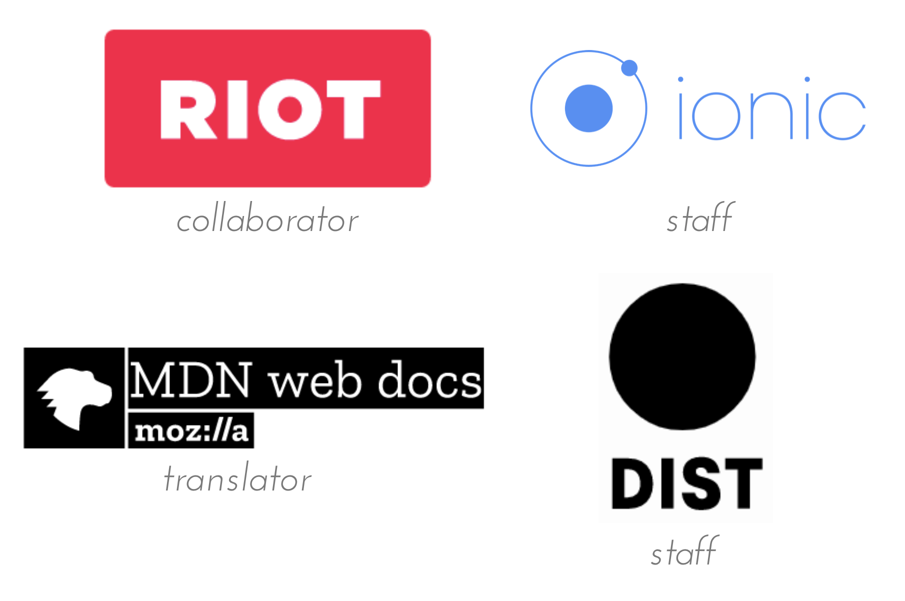

# JavaScriptの
開発環境構築ハンズオン
### 2018/02/15 @サポーターズCoLab勉強会
# Self-introduction
```
const my_info = {
name: '桑原聖仁',
twitter: '@kuwahara_ngv5（近々変更）',
github: 'k-kuwahara',
qiita: '@clown0082',
workplace: 'Yumemi, Inc.'
}
```
Communities

## Agenda
1. Node.jsのインストール
2. npmの使い方
3. package.jsonでモジュール管理
4. Webpackを使ってみよう
- bundle、難読化（min化）
- 複数に出力
- jqueryもバンドル
5. 今後の環境構築の方針
# 本日話さないこと
```md
・ 最新のツール
・ CSS周りの開発環境構築
・ 各ライブラリの詳細
```
### 時間の都合上最小限の環境のみになりますm(_ _)m
# いざJavaScriptの世界に
足を踏み入れると…
* Node.js、Nodebrew、NVM、NPM、Bower、Yarn
* Pug(Jade)、ES2015(ES6)、Babel、Gulp、Webpack
* AltJS、Flux、Redux、SSR、Frameworks、CLI
* minify、Caching、CDN、Unit Test、ESLint、Prettier
* SPA、Async/Await、AMP、PWA
…などなど
## Q. 色々あるのはわかったが
こんなに必要なの？
## A. なくてもいいが
「面倒な作業」が楽になる。
## 面倒な作業例
- AltJSで書かれたファイルのコンパイル
- テンプレートエンジンを用いたファイルのコンパイル
- `PostCSS, LESS, Sass`などのプリプロセッサのコンパイル
- `ESLint, JSLint, JSHint`などのリンターによるチェック
- js, cssのminify、ファイルのリネーム
- 画像ファイルの圧縮
- バンドル
...などなど
## 兎にも角にも、まずNode.jsを
インストールしましょう！
※この先Node.jsをインストールしていないと先に進めないですw
## ほとんどのモジュールが
Node.jsで動いているから。
- Windowsの人 => [__公式サイト__](https://nodejs.org/ja/)
- Macの人 => `nodebrew` or `nodenv`
- Linuxの人 => `nvm`
※Windowsの人は、再起動が必要です。
### Node.jsのバージョンが
`v0.x`、`v4`、`v5`、`v6`の方はいますか？
## 最低でも`v8.9(LTS)`以上に
アップグレードしてください(ﾟ∀ﾟ)
## モジュール導入の手順
1. `npm`から欲しいツール（モジュール）を探す
1. `npm`コマンドで自分の開発環境にインストール
1. 各ツールの仕様通りに動かす
言ってしまえばこれだけです。npmを使いこなせれば勝ちです。
## NPM（Node Package Manager）
『npm is the package manager for JavaScript and the world’s largest software registry. Discover packages of reusable code — and assemble them in powerful new ways.』
（[npm公式より）](https://www.npmjs.com/)
# npmはJavaScriptで開発する上で必須と言えます！
## npmの基本コマンド
```shell
・ npm install
・ npm list
・ npm uninstall
・ npm update
・ npm outdated
```
日常で使うのはこの5つだと思います(ﾟ∀ﾟ)
## 今回は以下の3つを確認します。
```shell
・ npm install ※
・ npm list ※
・ npm uninstall
・ npm update
・ npm outdated ※
```
日常で使うのはこの5つだと思います(ﾟ∀ﾟ)
## First!!
```shell
npm install
```
```shell
npm install [-g|--save|--save-dev] module
```
### 意味：モジュールのインストール
```shell
（省略形： npm i）
```
## `[-g|--save|--save-dev]`の意味は？
## こうです。
```css
-g: グローバルでインストールするもの
--save: 実際のアプリ稼働時に利用するもの
--save-dev: 開発時に利用するもの
```
※ `--save-dev`は`-D`でも良いです。
## 実際に`ja-greetings`というモジュールを
インストールしてみましょう！
（手前味噌ですみません…w）
```shell
$ npm install -g ja-greetings
```
又は
```shell
$ npm i -g ja-greetings
```
## `ja-greetings`を使ってみましょう。
```shell
$ ja-greetings new
```
## ちなみに、installは以下のように
複数まとめて実行もできます。
```shell
npm i -D hoge fuga piyo
```
## Next!!
```shell
npm list
```
```shell
npm list [-g] [--depth=n]
```
```shell
（省略形： npm ls）
```
### 意味：インストールされたモジュールの一覧表示
### `ja-greetings`がインストールされたか確認してみましょう！
以下のコマンドを実行して下さい♪
```shell
$ npm list -g --depth=0
```
又は
```shell
$ npm ls -g --depth=0
```
## Last!!
```shell
npm outdated
```
### まずは、先ほどの`ja-greetimgs`の
古いバージョンをインストールしましょう。
```shell
$ npm i ja-greetings@1.4.0
```
### 完了しましたら、以下を実行してください！
```shell
$ npm outdated
```
### 他にも、以下のようなコマンドがあるので
色々調べてみてください。
- uninstall (省略形：rm)
- search (省略形：s, find)
- doctor
- stars
### 3. package.jsonで
モジュール管理
## package.json
ode.jsのパッケージ（モジュール）を管理するための設定ファイルです。PHPの
Composerで言うところのComposer.jsonですね。
### 以下のコマンドを実行して下さい。
package.jsonが生成されます！
```shell
$ npm init -y
```
## 中身を見てみましょう！
```shell
・ name: アプリケーションの名前
・ version: アプリケーションのバージョン
・ scripts: npm runで実行するためのコマンドリスト
・ author: アプリケーションの開発者
・ license: ライセンス（困ったらMITで良いかと）
```
## その他の項目
```shell
・ homepage: ホームページのURL
・ repository: リポジトリのURL（npmではない）
・ bugs: 問題やバグ報告先（urlとemailを指定）
・ contributor: author以外の開発者
```
詳しくは[日本語取扱説明書](http://liberty-technology.biz/PublicItems/npm/package.json.html)を御覧ください( ﾟ∀ﾟ)
## では、このpackage.jsonを
更新していきましょう！
### まずは`webpack, ja-greetings`という
2つのモジュールをインストールしてみましょう！
```shell
$ npm i --save-dev webpack
$ npm i --save ja-greetings@1.4.0
```
### ① `node_modules`ディレクトリが作成され、
その中にモジュールがインストールされます。
### ② package.jsonが更新されます。
```JSON
// package.jsonの中身抜粋
...
"dependencies": {
"ja-greetings": "^1.4.0"
},
"devDependencies": {
"webpack": "^3.11.0"
}
...
```
## `dependencies, devDependencies`という
2つの項目に追加されました。
### 今後モジュールをインストールすると、
package.jsonに`名前: バージョン`形式で
自動で追記されます。
※ `--save|--save-dev`がないと追記されませんので注意！
### `ja-greetings`のアップデートを行ってみましょう！
以下のコマンドを実行して下さい。
```shell
$ npm outdated
$ npm up ja-greetings
$ npm ls --depth=0
```
### 以下のように、webpackのバージョンが
更新されたと思います。
```node
├── ja-greetings@1.4.1
└── webpack@3.11.0
```
### ここで`node_modules`ディレクトリを削除し、
以下のコマンドを実行してみてください。
```shell
$ rm -rf node_modules (Mac, Linuxの人)
$ rd /s node_modules (Windowsの人)
$ npm i
$ npm ls --depth=0
```
### 以下のように、必要なモジュールが
全てインストールされたと思います！
```node
├── ja-greetings@1.4.1
└── webpack@3.11.0
```
### `package.json`でモジュールのバージョンを
指定できますが、書き方は3通りあります。
```JSON
"devDependencies": {
// 「^」で指定
"webpack": "^3.11.0"
// 「~」で指定
"webpack": "~3.11.0"
// 指定なし
"webpack": "3.11.0"
}
```
## 意味はこうです。
`^`で指定
→ メジャーバージョンは固定で、最新のものをインストール
`~`で指定
→ マイナーバージョンまで固定で、最新のものをインストール
指定なし
→ バージョンを完全に固定して、インストール
### この`package.json`を共有すれば、他のメンバーも同じ開発環境を作ることができます♪（便利だなー）
# 導入したモジュールは自動で動いて欲しいですよね。
## そのためのツールが、こやつらです。
|Task Runner|評価|Bundler|評価|
|:--:|:--:|:--:|:--:|
|__Grunt__|D|__Webpack__|A|
|__Gulp__|B|__Rollup__|C|
※評価は私の独断と偏見に基づきます（笑）
## 今回触れるのはこの子。
|Task Runner|評価|Bundler|評価|
|:--:|:--:|:--:|:--:|
|__Grunt__|D|Webpack|A|
|__Gulp__|B|__Rollup__|C|
この4つの中では最も利用されているもの。
## Webpack
### bundle your assets, scripts, images, styles
 webpack is a module bundler. Its main purpose is to bundle JavaScript files for usage in a browser, yet it is also capable of transforming, bundling, or packaging just about any resource or asset.
webpack is a module bundler. Its main purpose is to bundle JavaScript files for usage in a browser, yet it is also capable of transforming, bundling, or packaging just about any resource or asset.
（[公式リポジトリ](https://github.com/webpack/webpack)より）
## 色んなファイル(※)を食わすと、よしなにバンドルして出力してくれるツールです。
※ 画像、`.ts`ファイル、`.scss`ファイル、フォント…など
※ ただし、webpack単体ではバンドルしかできない
## 今回のゴール（構築する環境）
1 複数のjsファイルの変更を検知
2 更新されたタイミングでファイルをminifyしてバンドル
3 バンドルするときに`jQuery`（外部ライブラリ）もバンドル
## ディレクトリの構成
```JavaScript
├ node_modules/
├ package.json
├ webpack.config.js
└ js/
└ *.js ← 検知対象ファイル
```
※`js`ディレクトリに`(適当な名前).js`
ファイルを作成して下さい。
## まずはWebpackの簡単な使い方
### 「`js/hoge.js`ファイルを`build`ディレクトリに出力」します
## Webpackをインストール
（必要な人のみ）
```shell
# package.jsonの生成
$ npm init -y
$ npm i [--save-dev|-D] webpack
```
※ `--save-dev, -D`はオプションです。
## 次に`webpack.config.js`を生成し、以下を記述してください
```JavaScript
const path = require('path')
module.exports = {
entry : './js/hoge.js',
output: {
filename: 'bundle.js',
path: path.resolve(`${__dirname}/build/`)
}
}
```
## 次に`js`ディレクトリ下に`hoge.js`ファイルを生成し、適当にコードを追記してください。
;
## Webpackを起動させるために
コマンドを設定
### `package.json`を開き、次のコードを追記して下さい。
```diff
// package.jsonの一部抜粋
...
"scripts": {
// 「-w」はwatchモードのオプション
// これで変更を検知し自動でバンドル
+ "build": "webpack -w"
},
...
```
## 準備完了です。以下の
コマンドを実行して下さい。
```shell
$ npm run build
```
※ここで自動的に`build`ディレクトリが生成されます。
## （実行結果例）
```shell
Hash: b78690c05f52f020db88
Version: webpack 2.4.1
Time: 101ms
Asset Size Chunks Chunk Names
bundle.js 2.73 kB 0 [emitted] main
[0] ./js/hoge.js 95 bytes {0} [built]
```
## `build/bundle.js`を開いてみて下さい。
## 以上が、最小限のWebpackの
動かし方です。それでは
今回のタスクに入っていきます。
## 【再掲】今回のゴール
（構築する環境）
1 複数のjsファイルの変更を検知
2 更新されたタイミングでファイルをminifyしてバンドル
3 バンドルするときに`jQuery`（外部ライブラリ）もバンドル
## 1. ファイルの変更を検知
## 2. バンドル、minify（難読化）
## `webpack.config.js`を開き、
次のコードを追記して下さい。
```diff
const path = require('path')
+ const webpack = require('webpack')
module.exports = {
- entry : './js/hoge.js',
+ entry : ['./js/hoge.js', './js/fuga.js'],
```
```diff
// "output"の終わりから
- }
+ },
+ plugins: [
+ new webpack.optimize.UglifyJsPlugin({
+ output: { comments: false }
+ })
+ ] //（以下略）
```
## jsディレクトリに`fuga.js`を作成し、
再度バンドルしましょう。
```shell
$ npm run build
```
## バンドルが完了したら
`build/bundle.js`を開いてみて下さい。
## 今回は以下のように、
```JavaScript
hoge.js: hoge.bundle.js
fuga.js、piyo.js: fuga.bundle.js
```
## それぞれで出力します。
## `webpack.config.js`を開き、
次のコードを追記して下さい。
```diff
module.exports = {
- entry : ['./js/hoge.js', './js/fuga.js'],
+ entry : {
+ hoge: './js/hoge.js',
+ fuga: ['./js/fuga.js', './js/piyo.js']
+ },
output: {
- filename: 'bundle.js',
+ filename: '[name].bundle.js',
//（以下略）
```
## ではバンドルしましょう。
```shell
$ npm run build
```
## `build`ディレクトリを開くと、
```JavaScript
build/
└ bundle.js
└ hoge.bundle.js ← new
└ fuga.bundle.js ← new
```
## となっていればOKです。
## webpackではライブラリも一緒に
バンドルすることができます。
今回は`jQuery`をバンドルしてみましょう。
## まずは`jQuery`をインストール
```shell
$ npm i --save jquery
```
※バージョンを指定したい方は適宜指定して下さい。
## 次に`hoge.js`を開き、
以下のコードを追記して下さい。
```JavaScript
console.info(jquery)
```
## さらに`webpack.config.js`を開き、
次のコードを追記して下さい。
```diff
// 一部抜粋
plugins: [
// 名前を予約
+ new webpack.ProvidePlugin({
+ jquery: 'jquery',
+ jQuery: 'jquery',
+ $ : 'jquery'
+ }),
// （以下略）
```
## ではバンドルしましょう。
```shell
$ npm run build
```
## バンドルが完了したら
`build/hoge.bundle.js`を開いて下さい。
## `jQuery`のソースがバンドルされているかと思います。
- ES2015（ES6）のコンパイル
- `babel` + `babel-loader`、`buble` + `buble-loader`
- `dev server`を使ってブラウザで確認
- `webpack-deb-server`
- 自動ユニットテスト
- `karma` + `mocha` or `Jasmine` or `Ava`など
- `Sass`のコンパイル、バンドル
- `sass-loader` + `css-loader` + `style-loader`
## 各フレームワークの「CLI」
を使いましょう。
- Angular => `@angular/cli`
- Ionic => `ionic-cli`
- React => `create-react-app`
- Vue => `vue-cli`
# JavaScript関連のツールは、栄枯盛衰が激しい。
# しかし、常に最新が正といいう訳でもないので
吟味して使いましょう！
### 付録：JavaScriptを取り巻くツール